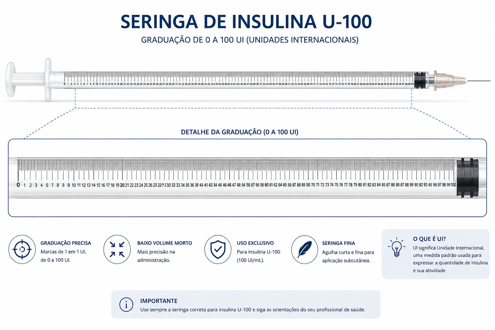

Materiais e Dispositivos
Seringa para Insulina
Guia rápido para profissionais de enfermagem: elementos, graduação U-100, unidades internacionais, dosagem correta, eventos adversos, dupla checagem e uso descartável. Diretrizes SBD 2025 e práticas seguras.

Seringa para insulina — clique na imagem para ampliar
Visão Geral
A seringa para insulina é um dispositivo médico descartável, de uso único, projetado especificamente para a aspiração e administração de insulina por via subcutânea. Diferente das seringas convencionais, a seringa de insulina é graduada em Unidades Internacionais (UI) e não em mililitros (mL), o que reduz significativamente o risco de erros de dosagem.
A insulina é classificada como medicamento de alta vigilância (high-alert medication) pela Organização Mundial da Saúde (OMS) e pelo Institute for Safe Medication Practices (ISMP). O uso inapropriado em qualquer etapa do processo — prescrição, armazenamento, preparo, administração ou descarte — pode trazer consequências sérias aos pacientes, como hipo ou hiperglicemia e, em casos extremos, até mesmo a morte.
Conceito-chave: A concentração padrão da insulina no Brasil é U-100, ou seja, 100 UI de insulina por mililitro (mL) de solução. A seringa deve sempre corresponder à concentração do frasco.
Elementos da Seringa para Insulina
A seringa para insulina é composta por quatro elementos fundamentais. O conhecimento detalhado de cada parte é essencial para o profissional de enfermagem garantir uma aspiração precisa e uma administração segura.

Exemplo de graduação da seringa — clique para ampliar
1. Cilindro (Corpo)
Tubo transparente de plástico onde a insulina é aspirada. Possui graduação em UI impressa na superfície. O cilindro é estéril internamente e não deve ser tocado.
2. Êmbolo (Pistão)
Haste interna que desliza dentro do cilindro para aspirar ou expelir a insulina. A ponta do êmbolo (borracha) indica o volume aspirado, alinhando-se com a graduação do cilindro.
3. Agulha
Agulha fina e curta, revestida com silicone para reduzir a dor. Comprimentos variam de 4 mm a 12,7 mm. Agulhas ≥12 mm não devem ser usadas pelo alto risco de aplicação intramuscular. Conforme a Diretriz SBD 2025, agulhas de 4 a 5 mm (caneta) e 6 mm (seringa) são a primeira escolha.
4. Graduação (Escala)
Marcações impressas no cilindro que indicam o volume em UI. Cada traço maior representa 2 UI e cada traço menor representa 1 UI. A leitura deve ser feita sempre no nível dos olhos para evitar erro de parallax.
Graduação e Unidades Internacionais (UI)
A graduação da seringa de insulina é o elemento mais crítico para a segurança do paciente. A insulina é medida em Unidades Internacionais (UI), uma unidade de medida padronizada internacionalmente que expressa a atividade biológica do hormônio, e não em miligramas (mg) ou mililitros (mL).
No Brasil, a concentração padrão é a U-100, que contém 100 UI de insulina em cada 1 mL de solução. Portanto, a seringa de insulina U-100 é calibrada para aspirar exatamente a quantidade de UI prescrita, sem necessidade de cálculo de conversão.
Atenção: Nunca utilizar seringa comum (graduada em mL) para administrar insulina. O uso de seringa inadequada é uma das principais causas de erros de dosagem com consequências graves, incluindo hipoglicemia severa.
Tabela: Correspondência entre UI e Volume (Seringa U-100)
| Unidades (UI) | Volume equivalente (mL) | Tipo de insulina mais comum |
|---|---|---|
| 10 UI | 0,10 mL | Regular, NPH, Análoga |
| 20 UI | 0,20 mL | Regular, NPH, Análoga |
| 30 UI | 0,30 mL | Regular, NPH, Análoga |
| 40 UI | 0,40 mL | Regular, NPH, Análoga |
| 50 UI | 0,50 mL | Regular, NPH, Análoga |
| 80 UI | 0,80 mL | NPH (dose elevada) |
| 100 UI | 1,00 mL | Dose máxima da seringa padrão |
Fonte: Concentração U-100 padrão ANVISA — 100 UI/mL.
Seringa Interativa: Visualização da Graduação
Digite a quantidade de unidades internacionais (UI) prescrita e observe como a seringa deve ser preenchida. Esta ferramenta didática ajuda o profissional de enfermagem a visualizar a graduação correta e treinar a aspiração precisa.
30 UI equivalem a 0,30 mL de insulina U-100.
A linha tracejada indica onde o êmbolo deve parar para a dose correta.
Dica de segurança: Sempre leia a graduação no nível dos olhos e confirme a dose com um segundo profissional quando a insulina é classificada como medicamento de alta vigilância. Utilize também a Calculadora de Aspiração de Insulina para treinar a técnica.
Importância da Dosagem Correta
A dosagem correta da insulina é um dos pontos mais sensíveis da prática de enfermagem. Um erro de apenas 2 UI pode provocar hipoglicemia sintomática em pacientes sensíveis, especialmente em crianças, idosos e pacientes com insuficiência renal.
A leitura da graduação deve ser feita sempre observando a parte superior da borracha do êmbolo (não a base), alinhada com a marcação correspondente à dose prescrita. A leitura incorreta, conhecida como erro de parallax, é uma das causas mais frequentes de erro de dosagem.
Recomendação SBD 2025: A técnica adequada de aplicação de insulina, a partir de educação continuada e sistematizada, é capaz de melhorar o controle glicêmico e alcançar as metas de hemoglobina glicada (HbA1c).
Possíveis Eventos Adversos
-
1
Hipoglicemia
Excesso de insulina — sudorese, tremor, confusão, convulsão e coma. Causa mais comum: erro de dosagem ou jejum prolongado.
-
2
Hiperglicemia / Cetoacidose
Dose insuficiente ou omissão — glicemia elevada, desidratação, hálito cetônico. Pode evoluir para coma diabético.
-
3
Lipohipertrofia
Reutilização de agulha ou rotação inadequada de sítios — acúmulo de tecido adiposo que altera a absorção da insulina.
-
4
Lipoatrofia
Perda de tecido adiposo no local de aplicação, associada a reações imunológicas ou técnica incorreta.
-
5
Infecção no local de aplicação
Reutilização de seringa/agulha ou falta de assepsia — abscessos, celulite.
-
6
Aplicação intramuscular
Agulha muito longa ou ausência de prega cutânea — absorção rápida e imprevisível, risco de hipoglicemia.
Dupla e Tripla Checagem
A insulina, por ser um medicamento de alta vigilância, exige dupla checagem independente em todas as etapas do processo de medicamento. A dupla checagem consiste na verificação, por dois profissionais diferentes, dos nove certos da administração de medicamentos.
Dupla Checagem
Realizada por dois profissionais (um prepara, outro confere). Obrigatória para insulina em instituições com protocolo de medicamentos de alta vigilância.
Tripla Checagem
Realizada por três profissionais. Recomendada em situações de risco: pediatria, UTI, doses elevadas, insulinas de alta concentração ou pacientes em jejum prolongado.
Os 9 Certos
1. Paciente certo · 2. Medicamento certo · 3. Dose certa · 4. Via certa · 5. Horário certo · 6. Documentação certa · 7. Motivo certo · 8. Resposta certa · 9. Direito de recusa.
Checklist de Checagem para Insulina
| Etapa | O que verificar | Responsável |
|---|---|---|
| 1. Prescrição | Nome do paciente, tipo de insulina, dose em UI, via SC, horário, concentração U-100 | Enfermeiro |
| 2. Preparo | Conferência do rótulo do frasco, validade, aspecto da insulina, seringa U-100 correta | Enfermeiro + Técnico |
| 3. Aspiração | Leitura da graduação no nível dos olhos, volume em UI correto, ausência de bolhas | Enfermeiro + Técnico |
| 4. Administração | Paciente correto (pulseira), sítio de aplicação, técnica SC, rotação de sítios | Enfermeiro + Técnico |
| 5. Registro | Anotação no prontuário: dose, horário, sítio, lote do frasco, resposta do paciente | Enfermeiro |
Conforme Diretrizes de Dupla e Tripla Checagem e Metas Internacionais de Segurança do Paciente.
Uso Descartável: Seringa e Agulha
Conforme a orientação dos fabricantes e as normas da ANVISA, as seringas e agulhas para aplicação de insulina são descartáveis e de uso único. Após cada aplicação, o conjunto seringa/agulha deve ser descartado em recipiente rígido para perfurocortantes.
A reutilização da agulha, mesmo pelo mesmo paciente, pode causar:
- ▸ Dor aumentada (perda do revestimento de silicone)
- ▸ Risco de infecção no local de aplicação
- ▸ Lipohipertrofia e alteração da absorção
- ▸ Rompimento ou curvatura da agulha
- ▸ Risco de acidente perfurocortante ao reencapar
Norma ANVISA: A reencapagem de agulhas é proibida pela RDC nº 306/2004 e pela NR 32, por ser a principal causa de acidentes perfurocortantes entre profissionais de saúde.
Reutilização Excepcional (Contexto Domiciliar)
Em situações excepcionais, no contexto domiciliar, a Portaria nº 2.583 do Ministério da Saúde considera segura a reutilização limitada do conjunto seringa/agulha (acoplados), desde que respeitadas as orientações abaixo.
Importante: Esta orientação aplica-se exclusivamente à autoaplicação domiciliar pelo próprio paciente, nunca em ambiente hospitalar ou por profissionais de saúde.
- 1 Máximo de 8 aplicações pelo mesmo paciente
- 2 Armazenamento em temperatura ambiente ou geladeira (gaveta/porta), com capa protetora
- 3 Não limpar a agulha com álcool — remove o silicone e aumenta a dor
- 4 Descartar quando a agulha estiver romba, curva ou dolorida
- 5 Paciente deve ter destreza manual, boa acuidade visual e sem tremores
- 6 Ausência de feridas nas mãos ou infecções de pele
Recomendações de Agulhas — Diretriz SBD 2025
A Diretriz da Sociedade Brasileira de Diabetes (Edição 2025) recomenda o uso da agulha mais curta disponível para reduzir o risco de injeção intramuscular. Agulhas de 4 e 5 mm (caneta) e 6 mm (seringa) devem ser a escolha de primeira linha por se mostrarem seguras, eficazes e menos dolorosas.
| Agulha (mm) | Indicação | Prega Subcutânea | Ângulo | Observações |
|---|---|---|---|---|
| 4 e 5 | Adultos e crianças | Dispensável (exceto crianças <6 anos) | 90° | Em pessoas com escassez de tecido SC, realizar prega |
| 6 | Adultos e crianças | Indispensável | 90° adultos / 45° crianças | Em adultos magros: 45° para evitar aplicação IM |
| 8 | Adultos | Indispensável | 90° adultos / 45° crianças | Evitar em pessoas magras e crianças |
| ≥12 | NÃO DEVEM SER USADAS — alto risco de aplicação intramuscular. Se única opção: 45° com prega cutânea. | |||
Fonte: Diretriz SBD 2025 — Práticas Seguras para Preparo e Aplicação de Insulina (Classe I, Nível B).
Prega cutânea recomendada para: IMC < 19 kg/m², adultos mais velhos, mulheres grávidas e crianças ≤ 6 anos. A prega garante a aplicação no tecido subcutâneo e não no muscular.
Boas Práticas: Passo a Passo da Aspiração
Higienização
Lavar as mãos e preparar o material em superfície limpa
Rolar o frasco
Insulina NPH: rolar entre as palmas. NUNCA agitar
Aspirar ar
Aspirar volume de ar igual à dose de insulina prescrita
Injetar ar
Injetar o ar no frasco para equalizar a pressão
Inverter o frasco
Inverter frasco e seringa para aspirar a insulina
Aspirar a dose
Puxar o êmbolo até a graduação correta em UI
Eliminar bolhas
Tocar levemente o cilindro para subir as bolhas e expulsá-las
Conferir
Dupla checagem da dose com outro profissional
Para treinamento prático da aspiração, utilize a Calculadora de Aspiração de Insulina e consulte também as páginas sobre Uso Seguro de Medicamentos e Medicamentos de Alta Vigilância.
Referências Bibliográficas
- SOCIEDADE BRASILEIRA DE DIABETES. Práticas Seguras para Preparo e Aplicação de Insulina. Diretriz da Sociedade Brasileira de Diabetes — Edição 2025. DOI: 10.29327/5660187.2025-15. Disponível em: https://diretriz.diabetes.org.br/praticas-seguras-para-preparo-e-aplicacao-de-insulina/. Acesso em: 9 ago. 2026.
- NÚCLEO DE TELESSAÚDE RIO GRANDE DO SUL. Quantas vezes reutilizar uma seringa para aplicação de insulina? Biblioteca Virtual em Saúde — Atenção Primária à Saúde, 8 ago. 2013. ID: sofs-5500. Disponível em: https://aps-repo.bvs.br/aps/quantas-vezes-podemos-reutilizar-uma-seringa-para-aplicacao-de-insulina/. Acesso em: 9 ago. 2026.
- BRASIL. Ministério da Saúde. Secretaria de Atenção à Saúde. Departamento de Atenção Básica. Diabetes Mellitus. Caderno de Atenção Básica nº 16. Brasília: Ministério da Saúde, 2006. (Série A. Normas e Manuais Técnicos).
- BRASIL. Agência Nacional de Vigilância Sanitária — ANVISA. Resolução RDC nº 306, de 7 de dezembro de 2004. Dispõe sobre o Regulamento Técnico para o gerenciamento de resíduos de serviços de saúde.
- INSTITUTE FOR SAFE MEDICATION PRACTICES — ISMP. List of High-Alert Medications in Long-Term Care Settings. Horsham: ISMP, 2024.
- ORGANIZAÇÃO MUNDIAL DA SAÚDE — OMS. Segurança do Paciente. Genebra: OMS, 2024. Disponível em: https://www.who.int/teams/integrated-health-services/patient-safety. Acesso em: 9 ago. 2026.
- CONSELHO FEDERAL DE ENFERMAGEM — COFEN. Resolução COFEN nº 358/2009. Dispõe sobre a Sistematização da Assistência de Enfermagem e a implementação do Processo de Enfermagem em ambientes públicos e privados.